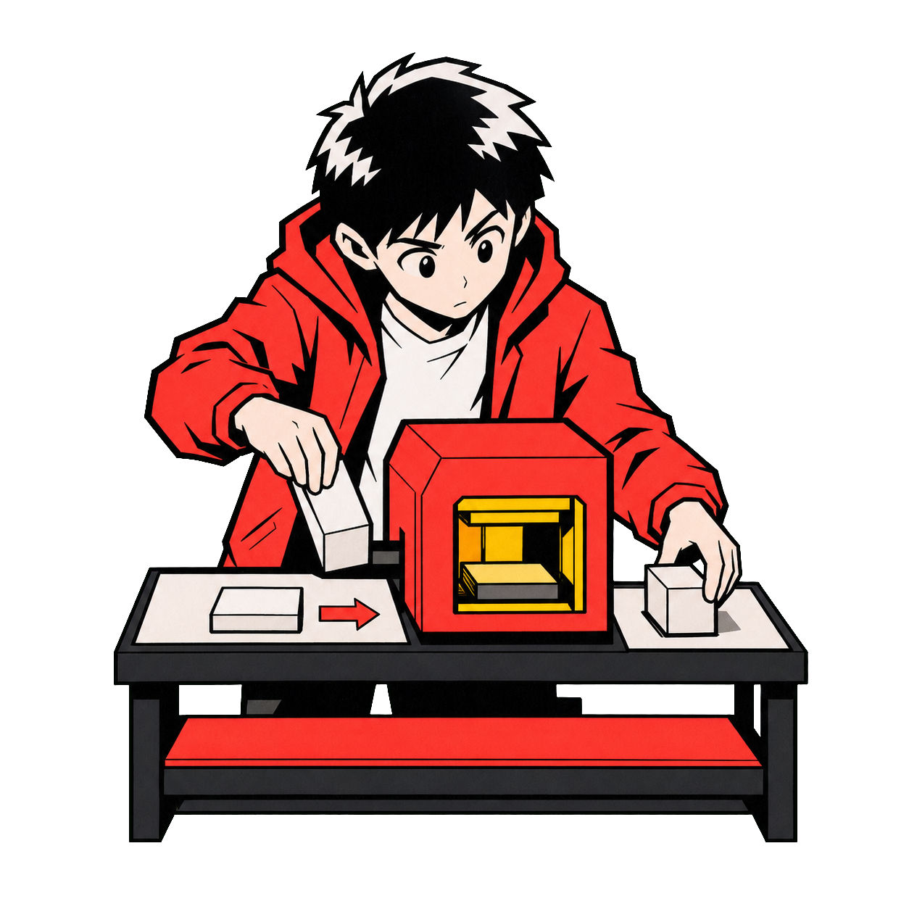

|
Ryan Brosas
Agent Systems Builder
Build Notes / [Issue 01] / [Month YYYY]
|
|
|
|
Agent build breakdown / reusable issue
[The workflow I tried to remove]
[Lead with the operating consequence: what kept returning, who absorbed it, and why it was worth examining.]
This template is for one real build at a time. Name the workflow, the smallest reliable system choice, what actually happened, and the part that still needs human judgment. If a script or process change was enough, say that plainly.
| Before publishing Replace every bracketed slot with inspected build notes. Delete this instruction plate, keep the evidence labels, and never turn a missing screenshot, result, or owned run into proof. |
|
 |
| Narrative illustration — Work Execution. Explanation, not operating proof. |
|
|
01 / What I was exploring
[Name the recurring work.]
[Describe where the workflow starts, how often it returns, and why the current route depends on a founder or operator. Keep the scope narrow enough that a reader can picture the actual task.]
| Trigger | [What starts the work?][A message, scheduled event, record change, request, or other concrete trigger.] |
| Input | [What context is required?][Name the source, owner, freshness requirement, and any missing information.] |
| Boundary | [What must stay human?][Name the decision, exception, approval, or recovery step that should not be automated away.] |
|
|
02 / What I expected
[State the smallest useful hypothesis.]
I expected [agent / script / process change] to handle [specific part of the workflow] because [source-backed reason]. The tradeoff was [cost, latency, brittleness, review load, or loss of flexibility].
|
|
03 / What actually happened
[Describe the observed run.]
[Name the inspected source: a terminal capture, trace, workflow log, screenshot, or owned test. Describe only what that source supports. Separate one successful behavior from one unresolved behavior.]
The interesting break [The task ran, but the handoff lost the failure context.][Explain what broke, what remained safe, and what the next available action was. A bug is useful when it changes the system design, not when it gets polished into a victory story.] |
|
|
04 / The system around the task
The agent is only one part.
Use this loop to show the operating system, not just the model call. If any stage is missing, leave it Open instead of pretending the workflow is finished.
| Operating loop |
| Context → Work → Checks → Handoffs → Recovery → Better context |
| Context | [Where does trusted input come from?][Include ownership, freshness, and what happens when the input is incomplete.] |
| Checks | [How is the output inspected?][Name the rule, evaluator, reviewer, or acceptance threshold without inventing a score.] |
| Handoff | [Who gets what next?][Name the destination, what context travels with the result, and who owns the decision.] |
| Recovery | [What happens when it fails?][State what remains safe, how the failure is surfaced, and the next available action.] |
|
|
05 / What I changed
[Name the design change.]
System choice [Agent, script, or process change?][Explain why this is now the smallest reliable intervention. Name the tradeoff you accepted and the part you deliberately did not automate.] |
[Describe the changed flow in two short paragraphs: first the mechanism, then how checks, handoffs, or recovery now behave differently.]
|
|
06 / Evidence boundary
Keep facts, choices, and gaps separate.
| Verified [The named inspected source shows the exact behavior described here.] |
| Proposed [I’d use this next change because of this reason. The tradeoff is named here.] |
| Open Still needed: [owned run, screenshot, trace, or comparison] to decide [the specific blocked decision]. |
|
|
07 / Next rabbit hole
Question for the next build [What new question did this failure create?][Name the next experiment, the evidence it should produce, and the decision that evidence will unblock.] |
|
Your turn Where does the work keep breaking?Reply with one recurring workflow and where it currently breaks. I’m looking for the specific handoff, check, missing context, or recovery step that keeps routing the work back to you. Workflow: ______
Current break: ______ |
|
|
Ryan
Agent Systems Builder
|
|